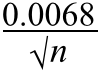
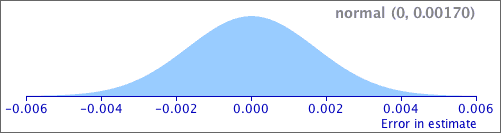

| standard error = σerror = |
Standard error and bias
When the sample mean is used to estimate a population mean, µ, the estimator is unbiased.
error = μerror = 0
The estimator's standard error is the standard deviation of the error distribution,
| standard error = σerror = |
Note that the error distribution does not depend on the value of µ. We can therefore evaluate the standard error provided the value of σ is known.
Example
We know that a particular type of measurement, X, has a normal distribution with known standard deviation σ = 0.0068 but unknown mean µ. A random sample of n = 16 values has sample mean 0.0724 and this is used to estimate µ . We can then find the distribution of errors that will arise using:
| error ~ normal (0, σ = |  | ) |
For sample size n = 16, this error distribution is:
